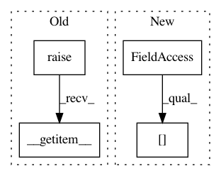

50777a53f05065b735a824e72ad553f4ffc7a235,nltk/lm/counter.py,NgramCounter,__getitem__,#NgramCounter#Any#,175
Before Change
def __getitem__(self, item):
User-friendly access to ngram counts.
if isinstance(item, int):
return super(NgramCounter, self).__getitem__(item)
elif isinstance(item, str):
return super(NgramCounter, self).__getitem__(1)[item]
elif isinstance(item, Sequence):
return super(NgramCounter, self).__getitem__(len(item) + 1)[tuple(item)]
After Change
def __getitem__(self, item):
User-friendly access to ngram counts.
if isinstance(item, int):
return self._counts[item]
elif isinstance(item, str):
return self._counts.__getitem__(1)[item]
elif isinstance(item, Sequence):
return self._counts.__getitem__(len(item) + 1)[tuple(item)]
In pattern: SUPERPATTERN
Frequency: 3
Non-data size: 4
Instances
Project Name: nltk/nltk
Commit Name: 50777a53f05065b735a824e72ad553f4ffc7a235
Time: 2018-08-16
Author: ilia.kurenkov@gmail.com
File Name: nltk/lm/counter.py
Class Name: NgramCounter
Method Name: __getitem__
Project Name: biolab/orange3
Commit Name: cf6b2d3e4c7bbf4aa68b1fc1ba3cfaf1663d48be
Time: 2014-09-12
Author: marko.toplak@gmail.com
File Name: Orange/statistics/contingency.py
Class Name: Continuous
Method Name: __getitem__
Project Name: scipy/scipy
Commit Name: aee644931d66a4e4eca62da1ce32597e330e341c
Time: 2006-12-20
Author: mattknox_ca@localhost
File Name: Lib/sandbox/timeseries/timeseries.py
Class Name: TimeSeries
Method Name: __str__